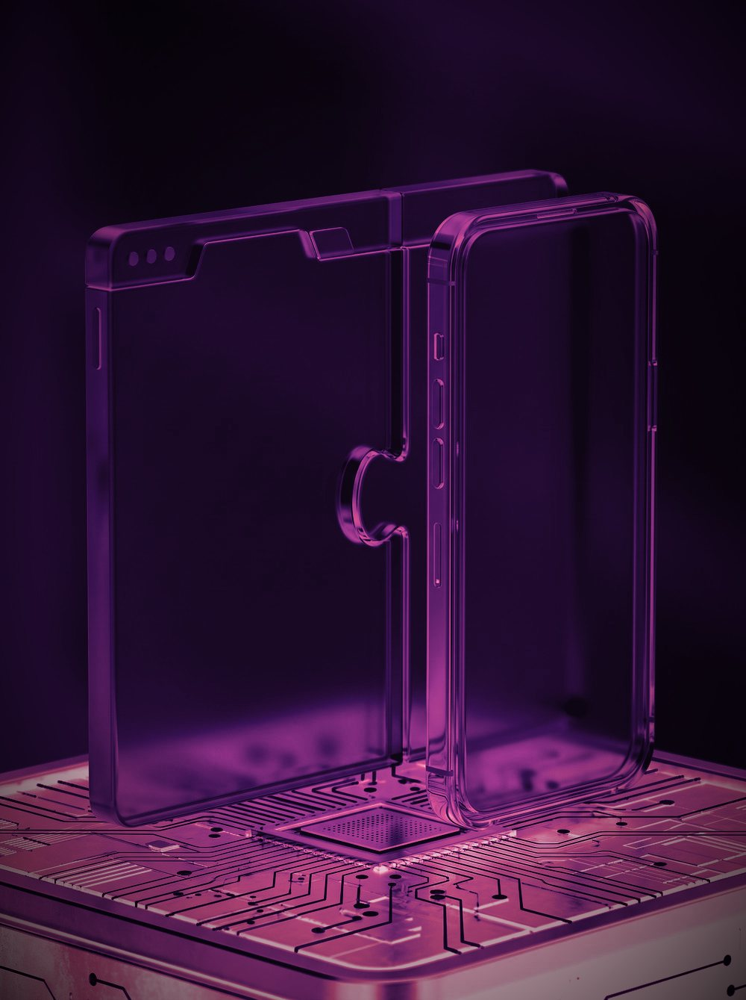
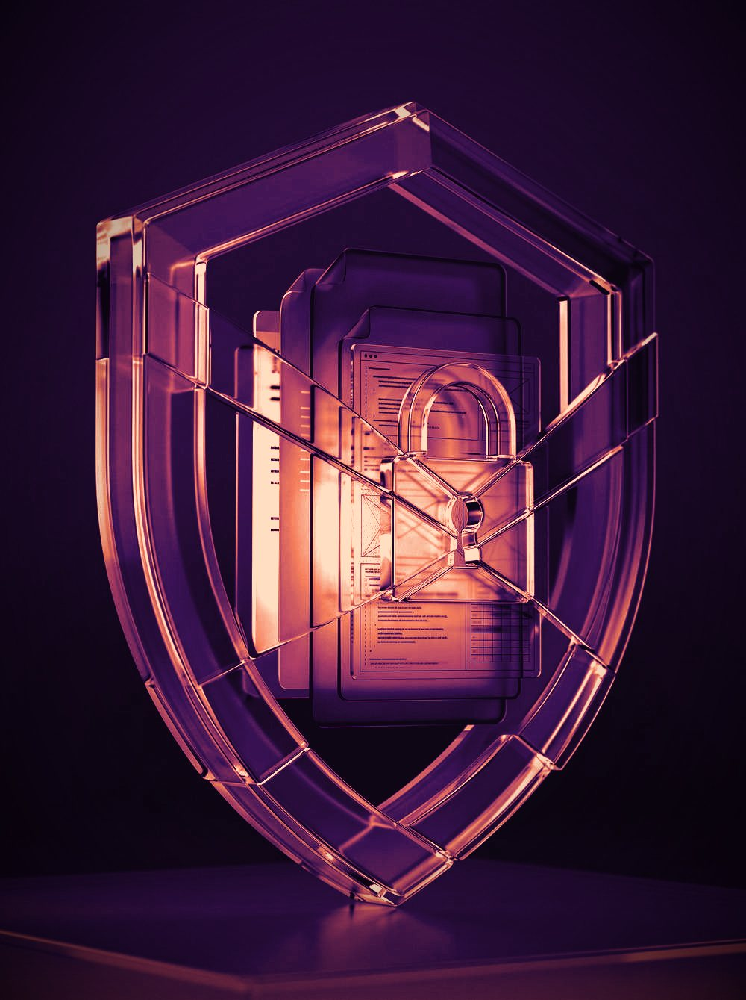
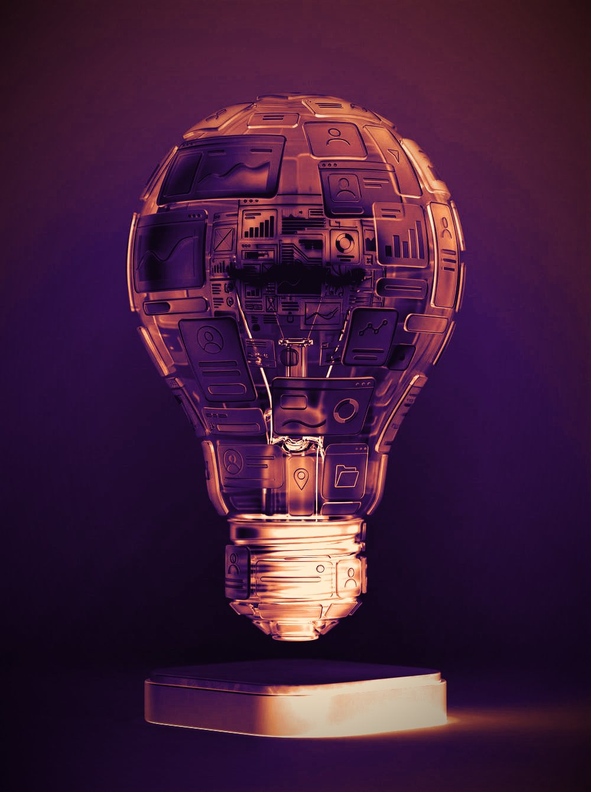
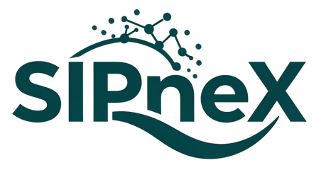
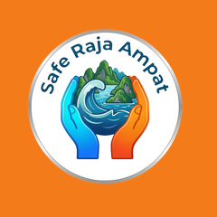

Media sosial yang menolak jalan yang sama.
SosMedPlus dirancang sebagai alternatif media sosial: feed yang lebih adil untuk setiap user, dengan integrasi Hedera (HBAR) dan token CYV yang masih berada di testnet.
Arsitektur web dan mobile dirancang modular sejak awal, setiap layanan berkembang sendiri tanpa mengganggu yang lain. Satu basis kode, banyak platform.

Sistem mengikuti standar keamanan yang dibutuhkan perusahaan dan lembaga publik di mana pun mereka beroperasi, dari autentikasi hingga jejak audit. Siap sejak hari peluncuran.


Dari ide, menjadi sistem yang benar-benar dipakai.
SosMedPlus dirancang sebagai alternatif media sosial: feed yang lebih adil untuk setiap user, dengan integrasi Hedera (HBAR) dan token CYV yang masih berada di testnet.
SIPneX berangkat dari pengalaman nyata membangun sistem presensi dan kinerja di tempat terpencil: sederhana saat sinyal melemah, tetap terstruktur saat pekerjaan harus berjalan.
Safe Raja Ampat menyusun laporan berkoordinat, peta, peringatan lokal, dan prinsip offline-first untuk masyarakat serta wisatawan di gugusan kepulauan.
Produk DIBSEN tersedia di Google Play dan terus dikembangkan dari Raja Ampat untuk kebutuhan yang nyata.
Suara, karya, dan kepemilikan dalam satu ruang sosial yang lebih transparan.
Jelajahi SosMedPlus ↗

Antarmuka dari build produk yang sedang dikembangkan. Tersedia di Google Play untuk eksplorasi lebih lanjut.